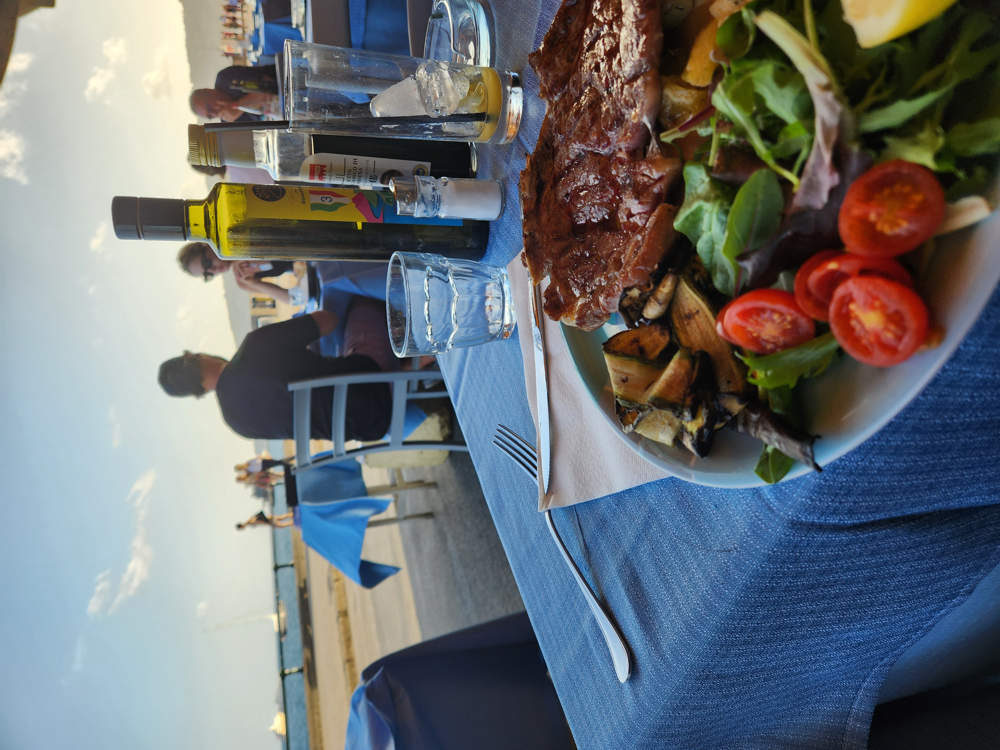

이탈리아 여행
나폴리
로마
피렌체
베네치아
밀라노
7/1
나폴리
전날 로마에 도착하고 다음날 아침에 일어나서 밥을 먹고, 로마 테르메니 역에서 기차를 타고 나폴리로 향했ek.
이 집 피자가 되게 맛있었다"
밥을 먹고 누우보 성을 갔다.

누우보 성을 갔다 오고 해변가에 가서 산책을 하다가 밥을 먹었다. 해변가가 정말 아름다웠다.
밥을 다 먹고 길에서 무슨 퍼레이드를 하길래 재밌게 관람했다.
그리고 숙소로 돌아왔다.